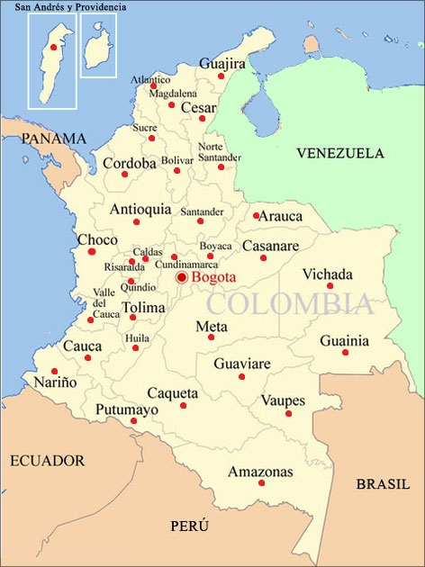

<div class="containerp">
  <h1>Lugares de Colombia donde nos encontramos</h1>
  <h2>Clickee en los puntos rojos para seleccionar un departamento</h2>  
  <map name="regiones">
    <area shape="circle" coords="152,246,5" href="departamento/ciudad/5" title="ANTIOQUIA">
    <area shape="circle" coords="170,96,5" href="departamento/ciudad/8" title="ATLÁNTICO">
    <area shape="circle" coords="202,308,5" href="departamento/ciudad/11" title="BOGOTÁ, D.C.">
    <area shape="circle" coords="196,189,5" href="departamento/ciudad/13" title="BOLÍVAR">
    <area shape="circle" coords="233,284,5" href="departamento/ciudad/15" title="BOYACÁ">
    <area shape="circle" coords="161,287,5" href="departamento/ciudad/17" title="CALDAS">
    <area shape="circle" coords="203,450,5" href="departamento/ciudad/18" title="CAQUETÁ">
    <area shape="circle" coords="97,397,5" href="departamento/ciudad/19" title="CAUCA">
    <area shape="circle" coords="224,131,5" href="departamento/ciudad/20" title="CESAR">
    <area shape="circle" coords="138,193,5" href="departamento/ciudad/23" title="CÓRDOBA">
    <area shape="circle" coords="193,285,5" href="departamento/ciudad/25" title="CUNDINAMARCA">
    <area shape="circle" coords="101,279,5" href="departamento/ciudad/27" title="CHOCÓ">
    <area shape="circle" coords="150,386,5" href="departamento/ciudad/41" title="HUILA">
    <area shape="circle" coords="245,84,5" href="departamento/ciudad/44" title="LA GUAJIRA">
    <area shape="circle" coords="190,116,5" href="departamento/ciudad/47" title="MAGDALENA">
    <area shape="circle" coords="234,374,5" href="departamento/ciudad/50" title="META">
    <area shape="circle" coords="60,412,5" href="departamento/ciudad/52" title="NARIÑO">
    <area shape="circle" coords="245,185,5" href="departamento/ciudad/54" title="NORTE DE SANTANDER">
    <area shape="circle" coords="145,312,5" href="departamento/ciudad/63" title="QUINDIO">
    <area shape="circle" coords="146,290,5" href="departamento/ciudad/66" title="RISARALDA">
    <area shape="circle" coords="222,245,5" href="departamento/ciudad/68" title="SANTANDER">
    <area shape="circle" coords="168,153,5" href="departamento/ciudad/70" title="SUCRE">
    <area shape="circle" coords="147,352,5" href="departamento/ciudad/73" title="TOLIMA">
    <area shape="circle" coords="100,355,5" href="departamento/ciudad/76" title="VALLE DEL CAUCA">
    <area shape="circle" coords="284,239,5" href="departamento/ciudad/81" title="ARAUCA">
    <area shape="circle" coords="292,285,5" href="departamento/ciudad/85" title="CASANARE">
    <area shape="circle" coords="148,467,5" href="departamento/ciudad/86" title="PUTUMAYO">
    <area shape="circle" coords="59,52,5" href="departamento/ciudad/88" title="ARCHIPIÉLAGO DE SAN ANDRÉS">
    <area shape="circle" coords="290,536,5" href="departamento/ciudad/91" title="AMAZONAS">
    <area shape="circle" coords="383,391,5" href="departamento/ciudad/94" title="GUAINÍA">
    <area shape="circle" coords="268,418,5" href="departamento/ciudad/95" title="GUAVIARE">
    <area shape="circle" coords="320,459,5" href="departamento/ciudad/97" title="VAUPÉS">
    <area shape="circle" coords="366,317,5" href="departamento/ciudad/99" title="VICHADA">

  </map>

  <figure style="text-align:center;">
    
    <figcaption>Mapa politico de Colombia</figcaption>
  </figure>

  <button mat-fab color="accent" [routerLink]="['/departamento']" title="Ver tabla">
    <mat-icon>table_view</mat-icon>
  </button>
</div>